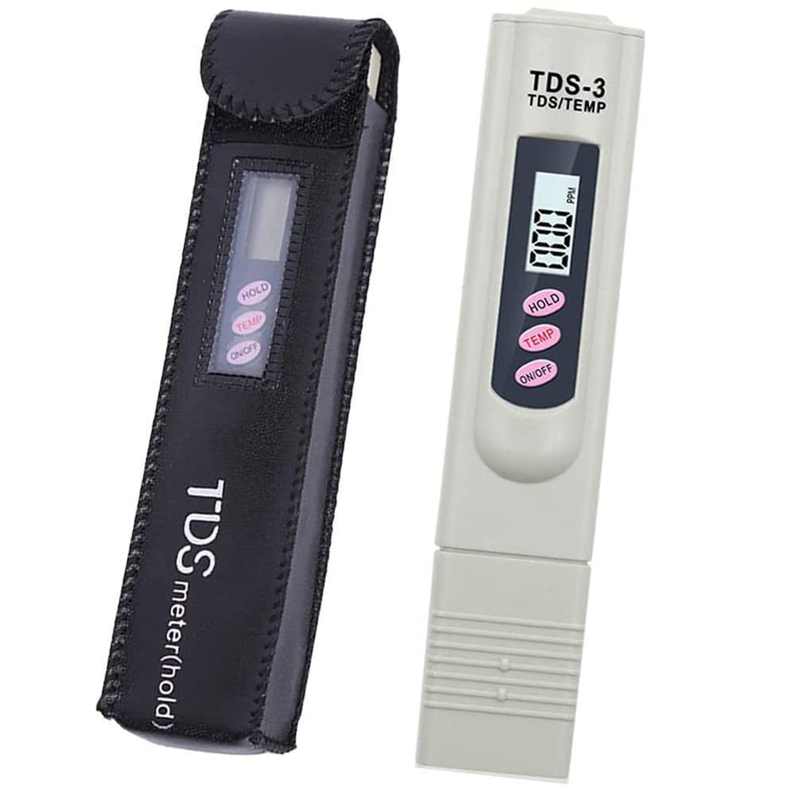
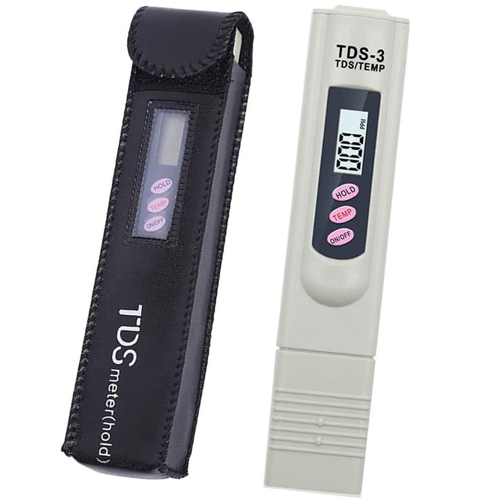
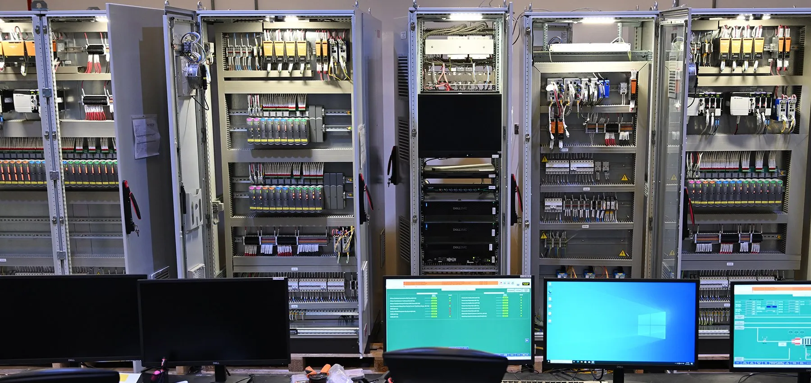

Our Supporting Technologies
Our comprehensive suite of advanced monitoring and control technologies provides real-time data acquisition, precise measurement, and intelligent automation for environmental and industrial applications. These cutting-edge solutions ensure optimal performance, regulatory compliance, and operational efficiency across diverse systems.
Flow Meter pH
Advanced flow meter pH systems provide continuous, real-time monitoring of both flow rates and pH levels in liquid streams. These integrated solutions are essential for water treatment, chemical processing, and environmental monitoring applications.
Key Features:
- Simultaneous flow and pH measurement
- High accuracy and reliability
- Corrosion-resistant materials
- Digital display and data logging
Applications:
- Wastewater treatment plants
- Chemical processing facilities
- Water quality monitoring
- Industrial process control
 

Online pH and T.D.S Meter
Continuous online monitoring systems for pH and Total Dissolved Solids (TDS) provide critical water quality parameters in real-time. These systems ensure consistent water quality and enable immediate response to parameter variations.
Technical Specifications:
- pH Range: 0-14 with ±0.01 accuracy
- TDS Range: 0-2000 ppm with ±2% accuracy
- Temperature compensation
- Automatic calibration capability
Benefits:
- Continuous monitoring and control
- Early detection of water quality issues
- Reduced manual testing requirements
- Improved process efficiency
Types of Flow & Process Meters
Comprehensive range of precision measurement instruments for industrial applications
Electromagnetic Flow Meter
Measures conductive liquid flow using Faraday's Law with no moving parts.
Applications
Water treatment plants, wastewater management, chemical and process industries.
Ultrasonic Flow Meter
Measures flow velocity by transmitting ultrasonic waves through fluid and calculating time difference.
Applications
Clean water systems, HVAC, energy monitoring, temporary flow measurement.
Turbine Flow Meter
Measures fluid flow by detecting rotational speed of turbine placed in flow path.
Applications
Fuel monitoring, oil & gas pipelines, chemical processing plants.
Vortex Flow Meter
Measures flow by detecting vortices formed when fluid passes a bluff body.
Applications
Steam flow measurement, gas flow systems, power plants.
Coriolis Mass Flow Meter
Direct mass flow measurement using Coriolis force on vibrating tubes.
Applications
Steam flow measurement, gas flow systems, power plants.
Thermal Mass Flow Meter
Gas flow measurement through heat transfer monitoring.
Applications
Compressed air, gas monitoring, HVAC
Differential Pressure Flow Transmitter
Measures flow via pressure difference across flow restrictions.
Applications
Steam flow, refinery pipelines

Handheld Flow Meter
Portable device for on-site flow measurement and calibration.
Applications
Field testing, system commissioning
Level Transmitter
Radar/ultrasonic level measurement for tanks and vessels.
Applications
Storage tanks, silos, wastewater plants
Flow Totalizer
Real-time flow display with accumulated flow calculation.
Applications
Billing systems, utility management
Compact Flow Sensor
Small form factor flow detection with electrical signal output.
Applications
Industrial automation, cooling systems
Pressure Transmitter
Converts pressure into standardized electrical output signals.
Applications
Pipelines, pumps, hydraulic systems
Intelligent Flow Transmitter
Smart transmitter with digital processing and communication.
Applications
Smart factories, Industry 4.0 systems
Inline Flow Meter
Direct pipeline installation with digital display capability.
Applications
Water distribution, process lines
Industrial Process Controller
Automated control system for flow, pressure, level, and temperature.
Applications
Control panels, automation, SCADA
Advanced Sensor Technologies
Comprehensive sensor solutions for environmental monitoring and process control
Temperature Sensors
High-precision temperature monitoring for critical process control and environmental applications.
Features:
- Wide temperature range
- Fast response time
- High accuracy ±0.1°C
- Digital and analog outputs
Pressure Sensors
Reliable pressure measurement solutions for hydraulic systems and process monitoring.
Applications:
- Pipeline monitoring
- Pump control systems
- Tank level measurement
- Process optimization
Level Sensors
Advanced level detection and measurement for tanks, reservoirs, and process vessels.
Technologies:
- Ultrasonic level sensors
- Radar level measurement
- Capacitive level sensors
- Float-based systems
Conductivity Sensors
Precise electrical conductivity measurement for water quality and chemical concentration monitoring.
Capabilities:
- Wide measurement range
- Temperature compensation
- Self-cleaning electrodes
- Digital communication
Turbidity Sensors
Optical turbidity measurement for water clarity assessment and filtration system monitoring.
Benefits:
- Real-time water clarity monitoring
- Filter performance optimization
- Regulatory compliance
- Process automation
Flow Sensors
Accurate flow measurement solutions for liquid and gas applications in various industrial processes.
Types:
- Electromagnetic flow meters
- Ultrasonic flow sensors
- Vortex flow meters
- Differential pressure sensors

